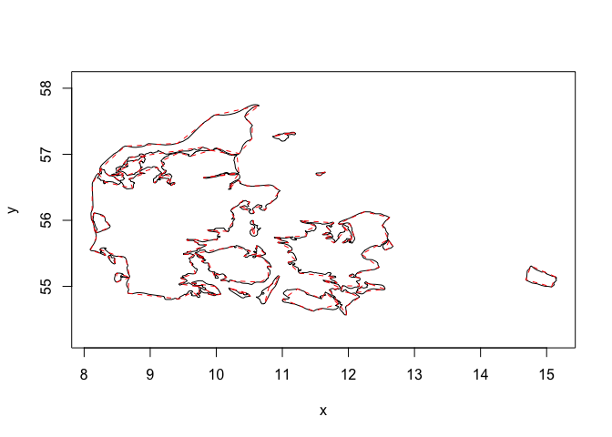
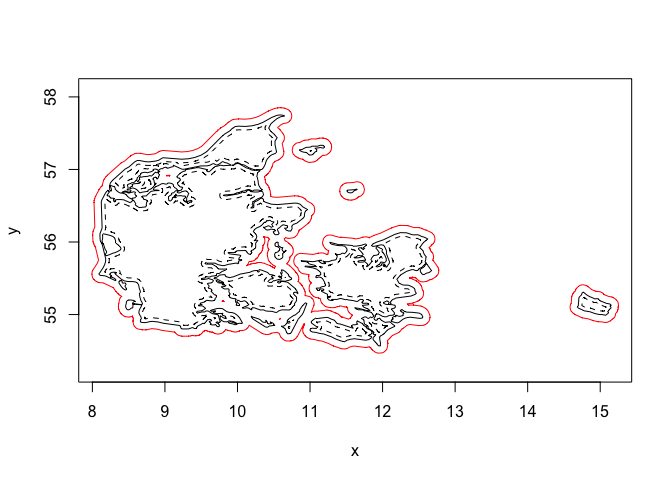

boundaries is a utility package for the euclid ecosystem providing tools for working (primarily) with polygon boundaries. Offsetting/insetting and simplification are among the primary algorithms provided by this package, but it serves as the place for any function used to somehow alter or do calculations on the polygonal rings
Installation
You can install the development version of boundaries like so:
pak::pkg_install("thomasp85/boundaries")Example
Below we show how to simplify a complex polygon, by reducing the number of vertices to a tenth of the original count:
library(boundaries)
#> Loading required package: euclid
#>
#> Attaching package: 'euclid'
#> The following object is masked from 'package:stats':
#>
#> line
#> The following object is masked from 'package:base':
#>
#> union
denmark <- polyclid::denmark()
sum(cardinality(denmark))
#> [1] 2165
denmark_simple <- simplify_poly(
denmark,
stop = "below count ratio",
stop_threshold = 0.1
)
sum(cardinality(denmark_simple))
#> [1] 214As can be seen the simplified polygon retains its features quite well
plot(denmark)
euclid_plot(denmark_simple, lty = 2, border = "red")
Offsetting and insetting can be calculated either based on the straight skeleton which retains the vertex angles, or using minkowski sum with a disc which introduces rounding of obtuse angles. Here we show insetting and offsetting with minkowski
plot(denmark)
inset <- minkowski_offset(denmark, -0.05, arc_segments = 10)
euclid_plot(inset, lty = 2)
offset <- minkowski_offset(denmark, 0.1, arc_segments = 10)
euclid_plot(union(offset), border = "red")
There are more functions provided in the packages. Explore the docs to learn more
Code of Conduct
Please note that the boundaries project is released with a Contributor Code of Conduct. By contributing to this project, you agree to abide by its terms.